Highlighted author(s): Helmut Ritsch
Authors: Eric Sánchez-Llorente, Helmut Ritsch, Maria Moreno-Cardoner
Type: theory · Category: other · PDF: https://arxiv.org/pdf/2605.28085v1
Analysis basis: full PDF text, analyzed in chunks
Topic relevance: 🔥 Dicke superradiance 4/5 · 🔥 correlated / nonlocal dissipation 4/5 · 🔥 free-space correlated emission 4/5 · methods for driven-dissipative 2/5 · non-equilibrium dynamics 2/5
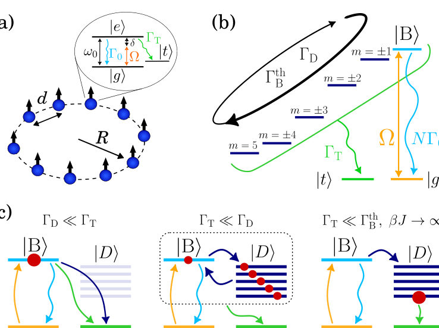
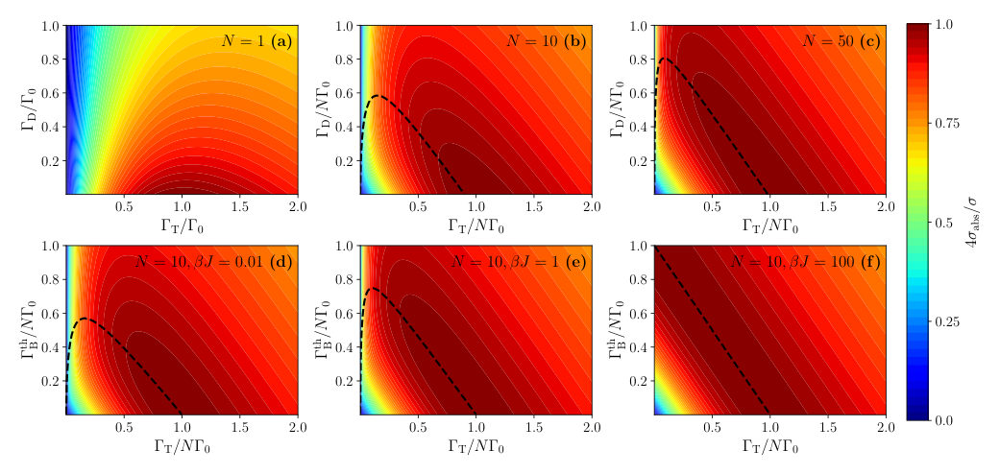
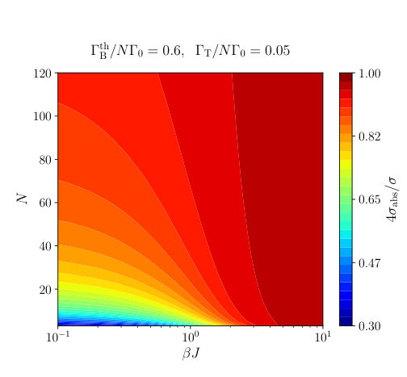
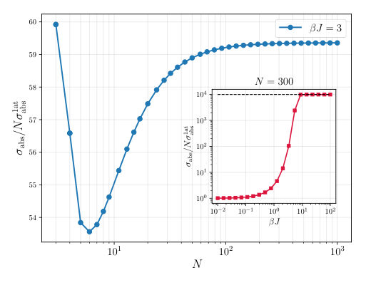
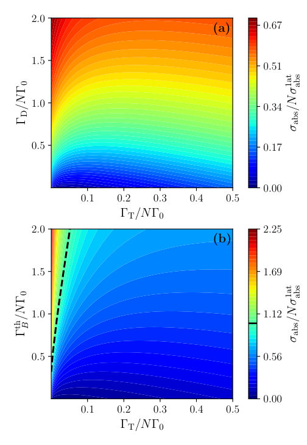
Summary. This paper shows that instead of being purely detrimental, environmental dephasing can enhance light absorption in a ring of quantum emitters by moving population into long-lived subradiant modes. This mechanism is particularly effective with thermal dephasing and can lead to absorption efficiencies exceeding the sum of independent atoms.
Why it may be interesting. It provides a counter-intuitive insight into open quantum systems, showing that environmental noise can be a constructive resource for enhancing light-matter interaction, which is highly relevant to quantum optics and light-harvesting research.
Main problem. Investigating whether environmental decoherence, such as dephasing and phonon coupling, can be utilized as a resource to enhance single-photon absorption in subwavelength nano-rings of quantum emitters.
Main result. The study demonstrates that decoherence can enhance absorption by redistributing population from superradiant (bright) modes into subradiant (dark) modes, with thermal dephasing potentially allowing collective absorption to surpass that of independent emitters.
Method. The authors use a Lindblad master equation approach within the single-excitation manifold, employing the Born-Markov approximation and analyzing steady-state populations and absorption cross-sections.
Model / system. A nano-ring of N dipole-coupled two-level quantum emitters in the deep subwavelength regime, modeled with a non-Hermitian effective Hamiltonian including dipole-dipole interactions and collective radiative decay.
Key observables. Absorption cross-section, scattering cross-section, and excited state population.
Important parameters / regimes. Number of emitters (N), interparticle spacing (d/lambda_0), dephasing rates (pure and thermal), trapping rate (Gamma_T), and temperature (beta).
Assumptions / limitations. Single-excitation manifold approximation, weak-field/weak-driving limit, Born-Markov approximation, and fixed emitter positions.
Figures summary. Figure 1 shows the nano-ring geometry and the level scheme of collective modes; Figure 2 illustrates the absorption cross-section as a function of dephasing and emitter number, showing the emergence of enhancement.
Paper structure. The paper introduces the problem of decoherence as a resource, defines the nano-ring model and master equation, analyzes single-atom vs. collective behavior under local dephasing, extends the study to thermal dephasing and temperature effects, and concludes with finite-size and incoherent illumination analysis.
Decoherence is mostly detrimental in quantum information and quantum optics applications. However, the interplay between environment-induced incoherent dynamics and unitary evolution can give rise to novel quantum many-body phenomena that can be harnessed as a useful resource. As is well known, in dense subwavelength atomic arrays only a single collective eigenmode in the single-excitation manifold couples strongly to free-space radiation, exhibiting superradiant spontaneous emission. Most of the remaining eigenstates form a manifold of weakly radiative modes, giving rise to long-lived subradiant excitations. Here we demonstrate that populating these subradiant modes via additional decoherence mechanisms, such as dephasing or coupling to phonons, can significantly enhance single-photon absorption in a nanoring of quantum emitters. Such nanoring geometry is particularly appealing due to its unique optical properties and its resemblance to natural light-harvesting complexes, which serve as efficient antennas in photosynthesis. Our findings may shed light on fundamental aspects of energy absorption in nature; despite the much greater complexity of biological systems, they may nonetheless operate according to similar underlying optical principles.
Highlighted author(s): Nicolò Defenu
Authors: Elie Vandoolaeghe, Iñigo Lasheras, Chirag Vaswani, Sampriti Saha, Purbasha Ray, Takashi Taniguchi, Kenji Watanabe, Prasana Sahoo, Nicolò Defenu, Thibault Chervy, Puneet A. Murthy
Type: both · Category: quantum gases · PDF: https://arxiv.org/pdf/2605.28623v1
Analysis basis: full PDF text, analyzed in chunks
Topic relevance: 🔥 quantum optics experiment 4/5 · analog quantum simulation 3/5 · driven-dissipative phase transition 3/5 · quantum measurements 2/5
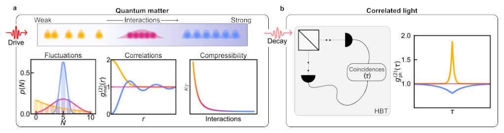
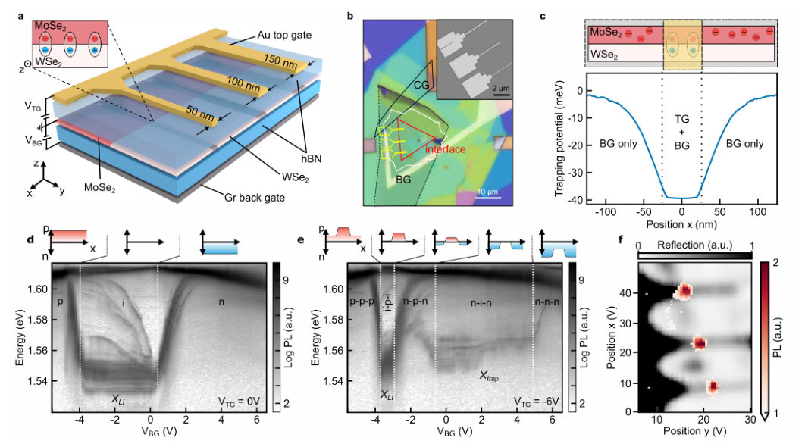
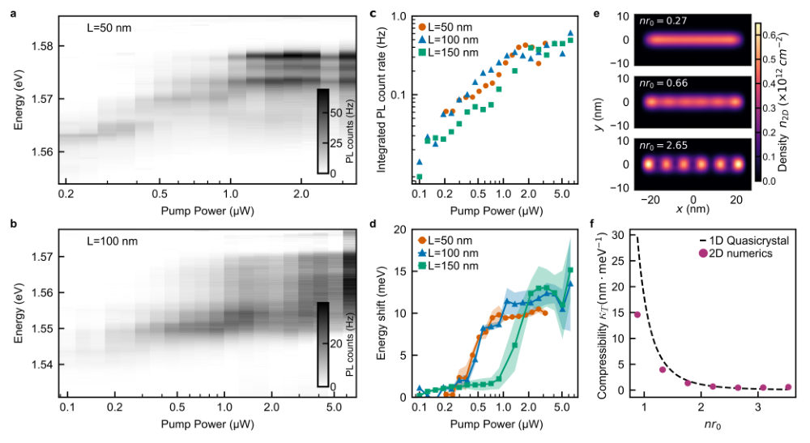
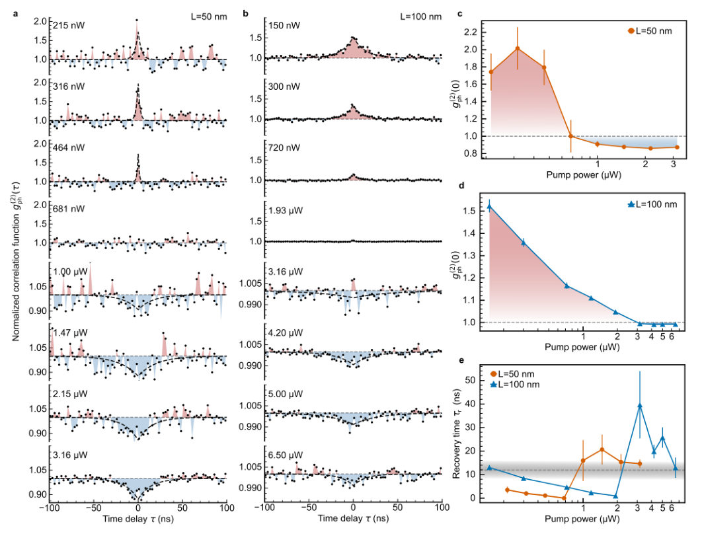
Summary. This paper introduces Photon Correlation Microscopy to study many-body correlations in 1D dipolar excitons. By measuring photon statistics, the authors observe a transition from photon bunching to antibunching, signaling a crossover from a compressible thermal gas to an incompressible, number-stabilized state. This technique provides a new way to probe correlated electronic phases using optical tools.
Why it may be interesting. It establishes a powerful new bridge between quantum optics and many-body physics, showing how photon statistics can serve as a non-invasive probe for complex phases like Wigner crystals or Mott insulators in semiconductor systems.
Main problem. Bridging the gap between quantum optics and many-body physics by developing a method to probe real-space many-body correlations and compressibility in quantum matter at mesoscopic scales.
Main result. The authors demonstrate Photon Correlation Microscopy (PCM) to observe a density-driven crossover in a 1D dipolar exciton gas from a compressible thermal phase (photon bunching) to an incompressible, number-stabilized quasi-crystal phase (photon antibunching).
Method. The study combines experimental Hanbury Brown-Twiss interferometry and power-dependent spectroscopy with numerical many-body simulations using the Multi-Configuration Time-Dependent Hartree method for bosons (MCTDH-B).
Model / system. A 1D ensemble of dipolar excitons confined in mesoscopic, gate-defined traps at a lateral MoSe2-WSe2 heterojunction, characterized by large permanent in-plane electric dipole moments and long radiative lifetimes.
Key observables. Second-order photon correlation function g2(0), photon bunching/antibunching, isothermal compressibility, particle number fluctuations, and photon recovery time.
Important parameters / regimes. Trap widths (50, 100, 150 nm), pump power, dipolar interaction strength, and the ratio of sampling length to coherence length.
Assumptions / limitations. The system is assumed to be in quasi-equilibrium (thermalization time is much shorter than radiative lifetime), and the photon statistics are assumed to track the local density fluctuations.
Figures summary. Figure 1 provides a schematic of PCM and the transition from thermal to incompressible phases; Figure 4 shows power-dependent photon correlation measurements for different trap sizes; Supplemental Figure S6 shows chemical potential and density distributions.
Paper structure. The paper introduces the PCM technique, describes the experimental platform and confinement method, presents the observation of the phase crossover via photon statistics, provides a theoretical validation of the link between photon and matter correlations, and concludes with scaling and dynamical analysis.
Light and matter share fundamental statistical properties, yet the experimental probes of quantum optics and many-body physics have largely evolved along separate trajectories. While many-body physics explores emergent collective phenomena, quantum optics has refined the measurement of correlations between individual photons. Here, we introduce photon correlation microscopy (PCM) - which bridges the two domains by leveraging correlations of emitted light to probe the correlations in quantum matter at mesoscopic scales. We demonstrate this approach using a one-dimensional (1D) ensemble of dipolar excitons confined at a lateral monolayer MoSe$_2$-WSe$_2$ heterojunction. We use gate-defined potentials to confine the 1D excitons to a mesoscopic lengthscale to enhance the visibility of matter correlations in the emitted photon field. Power-dependent spectroscopy reveals a transition from a compressible to an incompressible phase, signaled by the simultaneous saturation of the emission intensity and energy blueshift, which is supported by numerical simulations. Through this crossover, photon correlation measurements show a striking evolution from bunching at low densities to antibunching at high densities. This constitutes a many-body blockade of photon emission emerging directly from a number-stabilized state, driven by collective dipolar repulsion. Our results establish PCM as a powerful probe of many-body physics through the lens of quantum optics, extensible to a broad class of correlated electronic phases, while pointing toward a route to generating non-classical light through many-body correlations.
Authors: Liang-Hong Mo, Bastien Lapierre, Qiang Miao
Type: both · Category: other · PDF: https://arxiv.org/pdf/2605.27530v1
Analysis basis: full PDF text, analyzed in chunks
Topic relevance: 🔥 QC/QI experiment 5/5 · 🔥 non-equilibrium dynamics 4/5 · 🔥 non-equilibrium universality 4/5 · entanglement & information structure 3/5 · driven-dissipative phase transition 2/5
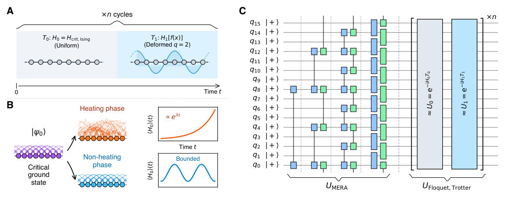
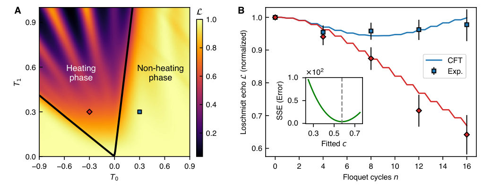
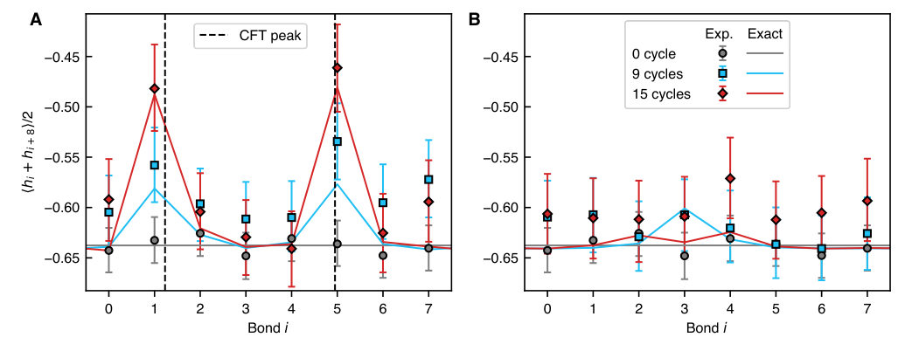
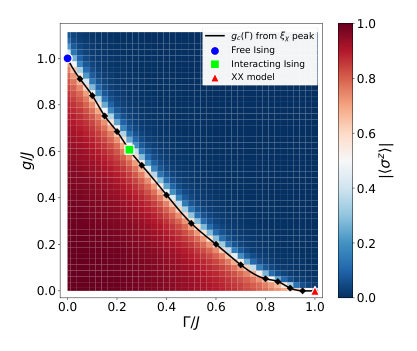
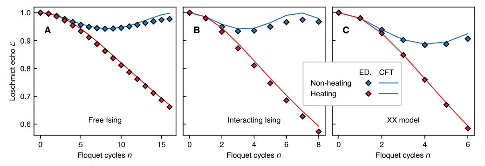
Summary. This paper reports the first experimental observation of non-equilibrium dynamics initiated from a many-body critical state using a trapped-ion quantum processor. By using MERA-based state preparation and a Floquet drive, the authors successfully measured the central charge of the Ising universality class. This establishes a versatile framework for studying complex, scale-invariant quantum dynamics on digital hardware.
Why it may be interesting. This work is highly relevant for many-body dynamics as it demonstrates a scalable way to explore Conformal Field Theory (CFT) predictions and non-equilibrium phase transitions using a digital quantum processor, moving beyond simple product-state initializations.
Main problem. Simulating non-equilibrium dynamics starting from many-body critical states is difficult due to bottlenecks in state preparation, hardware performance, and classical verification.
Main result. The researchers experimentally observed conformal Floquet dynamics on a trapped-ion processor, successfully extracting a central charge of c = 0.575 +/- 0.036, which is consistent with the Ising universality class prediction of c = 1/2.
Method. The study uses a hardware-tailored MERA circuit for critical state preparation and a deep Floquet drive implemented via Trotter-Suzuki decomposition, supplemented by error mitigation techniques like dynamical decoupling and parity post-selection.
Model / system. A 1D Transverse-Field Ising Model (TFIM) implemented on Quantinuum's Helios fully-connected trapped-ion quantum processor using Ba+ ions.
Key observables. Loschmidt echo, energy density, and central charge (c).
Important parameters / regimes. Heating and non-heating phases, driving periods (T0, T1), and the deformation amplitude/wavenumber.
Assumptions / limitations. The spatial profile of the deformation is simplified to a single harmonic sector, and the initial state is assumed to be the ground state of a uniform Hamiltonian.
Figures summary. Figure 1 shows the Floquet circuit setup and architecture; Figure 2 presents the phase diagram of the Loschmidt echo; Figure 4 shows the critical boundary in a perturbed Ising chain; Figure 5 compares experimental data to ED and CFT predictions; Figure 6 demonstrates the effectiveness of error mitigation.
Paper structure. The paper introduces the challenge of critical state dynamics, describes the experimental platform and MERA-based state preparation, details the Floquet driving protocol and error mitigation, presents the observation of heating/non-heating phases and central charge extraction, and concludes with the scalability and universality of the framework.
Quantum simulations are traditionally confined to exploring dynamics starting from unentangled or low-entanglement states due to severe bottlenecks in protocol design, hardware performance, and classical verification. Here, we report the first experimental observation of non-equilibrium dynamics initiated directly from a many-body critical state. Using a fully-connected trapped-ion processor, we prepare the critical ground state of a transverse-field Ising model via a hardware-tailored, logarithmic-depth quantum circuit based on multi-scale entanglement renormalization. Following this initialization, we apply a deep Floquet drive that maintains emergent conformal symmetry, enabling us to benchmark the lattice dynamics against analytical results from continuum theory. In the resulting conformal heating phase, we extract a central charge consistent with the Ising universality class ($c=1/2$) from the universal decay of the Loschmidt echo and observe spatial energy localization predicted by field theory. Conversely, the non-heating phase exhibits global finite-time revivals. This work establishes a scalable and versatile framework for exploring critical quantum dynamics.
Authors: Lin Wang, Xichang Zhang, Konstantin Manannikov, Nir Davidson, Ying Hu, Dongdong Hao, Yanhong Xiao
Type: experiment · Category: quantum information and computing · PDF: https://arxiv.org/pdf/2605.28316v1
Analysis basis: full PDF text, analyzed in chunks
Topic relevance: 🔥 quantum optics experiment 5/5 · 🔥 correlated / nonlocal dissipation 4/5 · QC/QI experiment 3/5
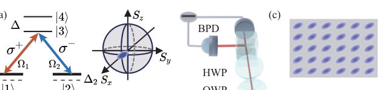
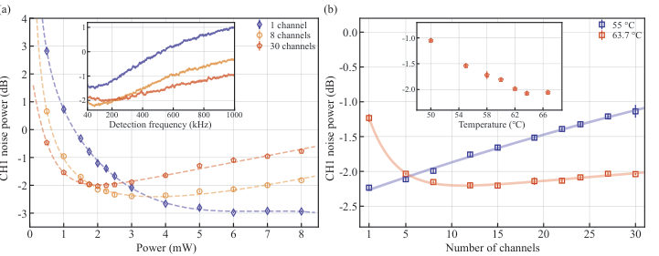
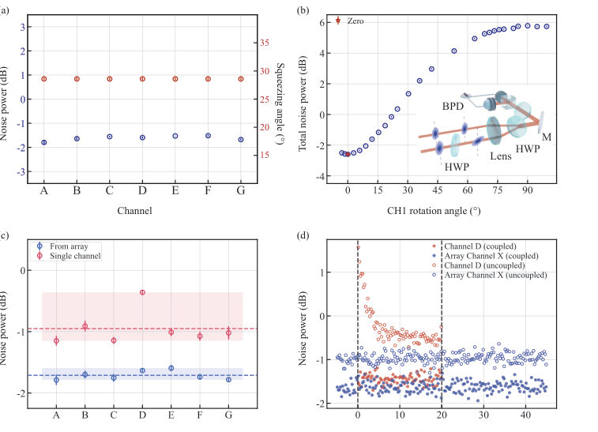
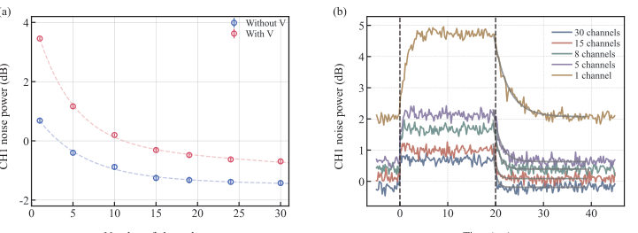
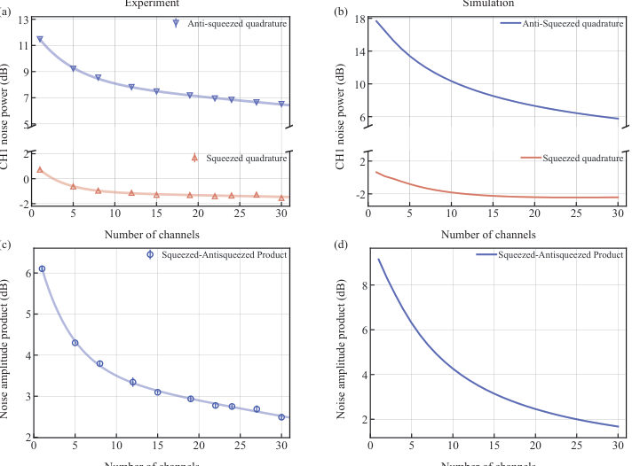
Summary. The researchers successfully created a large-scale array of 30 synchronized squeezed light beams using a single atomic vapor cell. By leveraging the movement of atoms between light beams, they achieved collective effects that improve the stability and purity of the quantum states. This provides a scalable pathway for generating multi-channel quantum light sources for imaging and computing.
Why it may be interesting. It demonstrates how dissipative coupling through a shared reservoir (flying atoms) can induce synchronization and collective enhancement in a many-body optical system, relevant to open quantum systems and quantum networks.
Main problem. The challenge of scalable production of multiple beams of squeezed light for quantum information technologies and exploring the collective synchronization of these beams.
Main result. Demonstration of a 3-beam array of polarization-squeezed light with 2.03 dB of squeezing, showing that inter-channel coupling via atomic diffusion leads to synchronization and improved state purity.
Method. Experimental generation of squeezed light using polarization self-rotation (PSR) in a Rubidium vapor cell, with detection via balanced homodyne detection and characterization of array uniformity and synchronization.
Model / system. A 30-beam spatial array interacting with an 87-Rb atomic vapor in a paraffin-coated glass cell, modeled using a multi-level master equation describing atomic density matrix evolution and inter-channel coupling via a shared reservoir of atoms.
Key observables. Squeezing level (dB), squeezing angle, noise power vs. laser power, squeezing bandwidth, and time-resolved recovery dynamics after perturbations.
Important parameters / regimes. Number of channels (1 to 31), laser power per channel, cell temperature (55 to 66.7 C), beam size, and detection frequency.
Assumptions / limitations. Neglect of certain experimental imperfections like extreme inhomogeneities and optical losses in the numerical models; assumes atoms in the dark region act as a global reservoir.
Figures summary. Figures show atomic energy levels, experimental schematics, noise power vs. laser power for different array sizes, squeezing angle uniformity, and the impact of polarization defects and cell geometry on squeezing performance.
Paper structure. The paper introduces the scalability problem, describes the experimental setup and atomic mechanism, presents results on squeezing levels and array scaling, investigates synchronization and robustness to defects, and concludes with optimization strategies via numerical simulations.
Quantum light sources such as squeezed light are essential for quantum information science and technologies, but the scalable production of multiple beams of them remains a challenge. Here,we experimentally demonstrate a novel approach to the generation of a large spatial array of polarization-squeezed light beams via atomic-coherence-enhanced nonlinear optical processes using a single atomic vapor cell. Unlike schemes based on independent squeezing generators, the squeezing dynamics of each channel here are governed by a common collective ground-state atomic coherence, produced by all input beams, homogenized by the thermal motion of the atoms, and protected against wall collisions by a paraffin coating. Consequently, the optical states of all channelsare coupled and regulated by each other via the moving atoms, leading to synchronization behavior.We realized a 30-beam array of polarization squeezed state with 2.03 dB of squeezing, experimentally verified the synchronization, and observed improved purity of the squeezed state as well as the system response to perturbations when the size of the array increases. This work provides a pathway towards scalable high-performance quantum light sources for applications in precision measurement, quantum imaging and quantum information processing.
Authors: Adrien Moulinas, Xavier Waintal
Type: theory · Category: numerical methods · PDF: https://arxiv.org/pdf/2605.27515v1
Analysis basis: full PDF text, analyzed in chunks
Topic relevance: 🔥 methods for driven-dissipative 5/5 · entanglement & information structure 2/5 · non-equilibrium dynamics 2/5
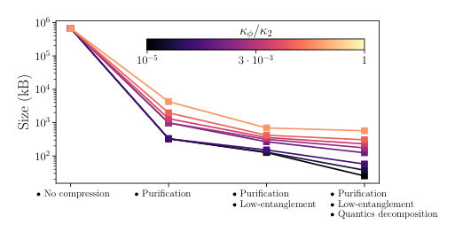
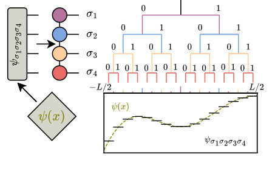
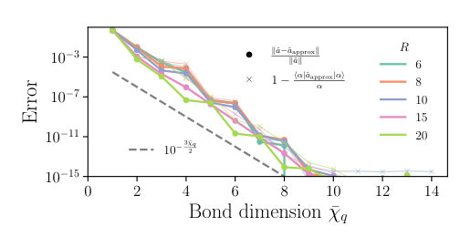
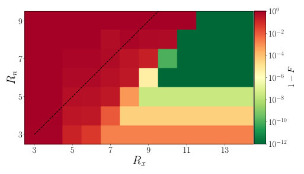
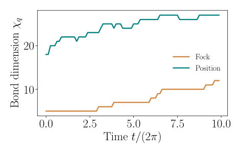
Summary. This paper presents a multilevel tensor network technique to simulate the dissipative dynamics of superconducting bosonic circuits. By leveraging state purity, low entanglement, and a quantized representation of Fock space, the method achieves massive reductions in memory and time complexity. This allows complex simulations of phenomena like transmon ionization to be performed on a laptop rather than a supercomputer.
Why it may be interesting. It provides a highly efficient numerical framework for simulating open quantum systems with large local Hilbert spaces, specifically bridging the gap between complex many-body dynamics and accessible desktop-level computation.
Main problem. The exponential growth of the Hilbert space dimension (the curse of dimensionality) makes simulating the Lindblad dynamics of large-scale bosonic systems, such as superconducting circuits, computationally prohibitive.
Main result. The authors developed a multilevel tensor network compression technique that achieves orders-of-magnitude speed-ups, reducing the computational resources required for transmon ionization simulations from supercomputing scales to laptop level.
Method. A three-axis compression approach combining global purification of the density matrix, Matrix Product State (MPS) representation for low entanglement, and Quantics Tensor Train (QTT) for efficient Fock space discretization using Tensor Cross Interpolation (TCI).
Model / system. Superconducting quantum circuits, specifically focusing on bosonic modes in cat qubits and transmon-cavity systems subject to Lindblad master equation dynamics involving photon loss and dephasing.
Key observables. Purity, Wigner functions, expectation values of field amplitude, transmon and cavity populations, and error rates (phase-flip and bit-flip).
Important parameters / regimes. Bond dimensions (purity chi_mu, entanglement chi_e, and quantics chi_q), photon loss rate (kappa_2), dephasing rate (kappa_phi), and the number of bits (R) in the QTT.
Assumptions / limitations. The density matrix is relatively pure or not far from pure, and the entanglement between different modes is moderate (qubit-like).
Figures summary. Figure 1 shows memory reduction across compression stages; Figure 2 illustrates the QTT construction process; Figure 3 shows error convergence of the annihilation operator; Figure 4 shows fidelity of basis conversion; Figure 12/13 show population evolution, purity loss, and Hamiltonian eigenstate branches.
Paper structure. The paper introduces the computational problem, details the three-axis compression ansatz (Purification, MPS, and QTT), describes the numerical integration schemes (Kraus maps, TDVP, Magnus expansion), and validates the method through simulations of cat qubits and transmon ionization.
Designing superconducting quantum hardware requires simulation tools that can account for various deviations from ideal scenarios. This, in turn, requires approaches that automatically detect certain structures and leverage them to make the computation affordable. Here, we develop a tensor network based technique to simulate the Lindblad dynamics of a few interacting bosonic modes with a focus on superconducting quantum circuits. The technique detects and takes advantage of two very common situations: (i) the density matrix being pure or not far from pure and (ii) the entanglement between different modes being moderate (typically qubit-like). However, (iii) the occupation of the modes can be arbitrarily high (making naïve truncations inefficient). To leverage these features, we use three different nested levels of tensor network compression: (i) we work with a global purification of the density matrix, (ii) we compress the connection between different modes to account for the moderate entanglement and (iii) we use a quantics representation of the Fock occupation number. We showcase the technique for the simulation of large cat qubits as well as for the ionization of transmon qubits, demonstrating orders-of-magnitude speed-up with respect to brute force approaches. In the latter example, it brings the simulation, previously reported on a large supercomputing infrastructure, to laptop level. The favorable scaling with system size should bring genuine computer assisted design of these systems within scope.
Authors: Yuma Nakanishi
Type: theory · Category: statistical mechanics · PDF: https://arxiv.org/pdf/2605.28126v1
Analysis basis: full PDF text, analyzed in chunks
Topic relevance: 🔥 Tavis-Cummings & cavity-many-emitter 4/5 · 🔥 driven-dissipative phase transition 4/5 · 🔥 non-equilibrium universality 4/5 · correlated cavity matter 3/5 · entanglement & information structure 3/5 · non-equilibrium dynamics 3/5 · Dicke superradiance 2/5 · Keldysh / 2PI / non-Gaussian methods 2/5 · exotic spin models in light-matter 2/5 · methods for driven-dissipative 2/5
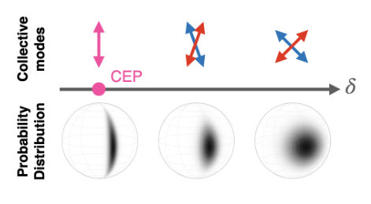
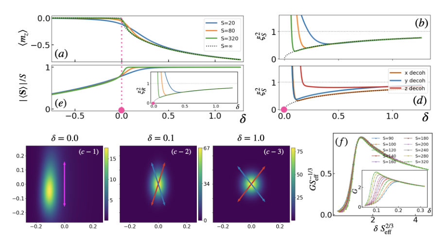
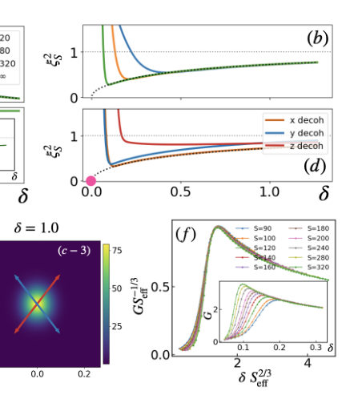
Summary. This paper demonstrates that Critical Exceptional Points in open many-body systems can significantly enhance quantum spin squeezing. It establishes specific power-law scaling for squeezed and anti-squeezed variances near the transition and identifies the conditions under which this effect is robust against decoherence.
Why it may be interesting. It provides a novel mechanism for engineering highly anisotropic quantum correlations and steady-state entanglement by leveraging non-Hermitian singularities (CEPs) in driven-dissipative platforms.
Main problem. The paper investigates whether Critical Exceptional Points (CEPs) in open many-body systems can be used to parametrically enhance quantum spin squeezing and how these effects scale near the transition.
Main result. Near a CEP, the optimally squeezed variance scales linearly with the order parameter (|Z|), while the anti-squeezed variance diverges (|Z|^{-1}), creating a highly anisotropic fluctuation plane. This enhancement is robust against certain dephasing channels but is destroyed by z-axis dephasing.
Method. The study uses a mean-field approach, linearized dynamics around the PT-broken fixed point, and the solution of the steady-state Lyapunov equation within a Gaussian approximation in the thermodynamic limit.
Model / system. The model consists of dissipative collective-spin systems governed by the GKSL master equation, specifically focusing on L-PT symmetric models such as a spin-boson system where a collective spin is coupled to a lossy cavity mode.
Key observables. Quantum spin squeezing parameter (Kitagawa-Ueda), Wineland parameter, covariance matrix, and the Husimi-Q distribution.
Important parameters / regimes. Dimensionless order parameter (Z), spin size (S), collective decay rate (kappa), transverse field (g), and dephasing rates (gamma).
Assumptions / limitations. The analysis assumes the thermodynamic limit (large S), a Gaussian description of fluctuations, and specific constraints on the diffusion matrix (e.g., Dz = 0 for the primary scaling result).
Figures summary. Figure 1 shows a schematic of mode coalescence at the CEP and an illustration of the increased anisotropy of the spin distribution on the Bloch sphere. Figure 2 demonstrates the scaling collapse of the inverse squeezing using a logarithmically corrected finite-size scaling form.
Paper structure. The paper introduces the concept of CEPs and their role in fluctuations, develops the mathematical framework for the L-PT symmetric collective spin model, derives the scaling laws for squeezing and anti-squeezing near the CEP, analyzes the robustness against dephasing, and concludes with finite-size scaling and experimental realizations.
Critical exceptional points (CEPs) are nonequilibrium critical points in open many-body systems at which multiple collective excitation modes coalesce. CEPs are known to amplify classical fluctuations, but their effect on genuinely \textit{quantum} fluctuations remains unclear. Here, we show that dissipative collective-spin systems hosting CEPs exhibit parametrically enhanced steady-state \textit{quantum} spin squeezing. Close to the CEP, the optimally squeezed variance scales as $|Z|$, whereas the anti-squeezed variance diverges as $|Z|^{-1}$, with $Z$ the dimensionless order parameter. Importantly, the anti-squeezed fluctuation direction asymptotically aligns with the coalescing eigenvector of the stability matrix, reflecting the defective nature of the CEP dynamics. These scalings are robust against dephasing channels generated by spin components orthogonal to the coalesced critical collective mode. Our results identify CEPs as a route to engineering steady-state anisotropic quantum fluctuations and correlations in driven-dissipative platforms.
Authors: John W. Biddle
Type: theory · Category: statistical mechanics · PDF: https://arxiv.org/pdf/2605.27635v1
Analysis basis: full PDF text, analyzed in chunks
Topic relevance: 🔥 methods for driven-dissipative 4/5 · non-equilibrium dynamics 3/5 · correlated / nonlocal dissipation 2/5 · driven-dissipative phase transition 2/5 · entanglement & information structure 2/5 · non-equilibrium universality 2/5 · quantum measurements 2/5
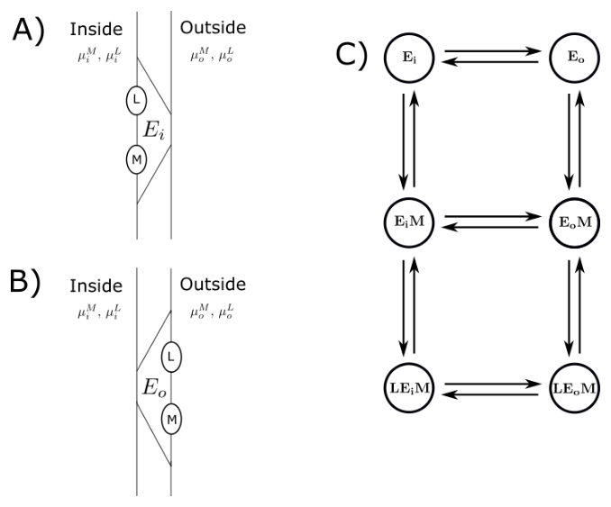
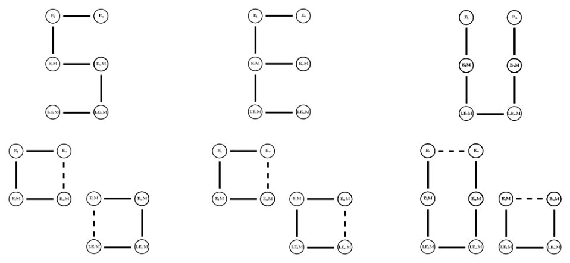
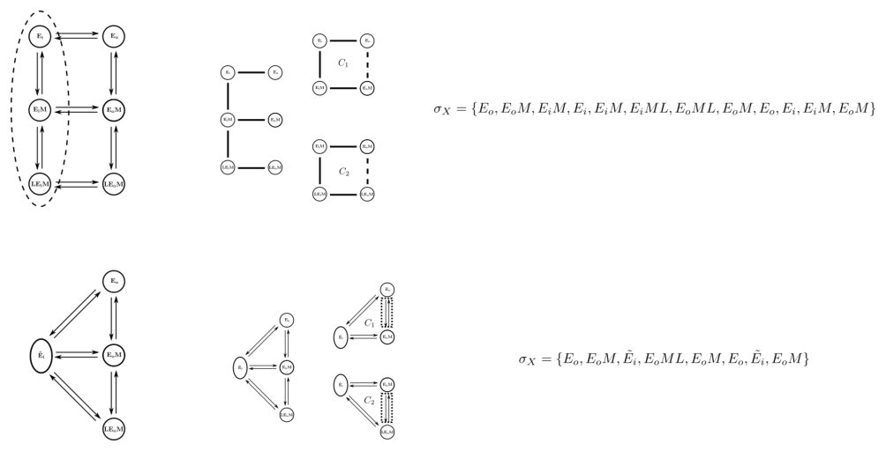
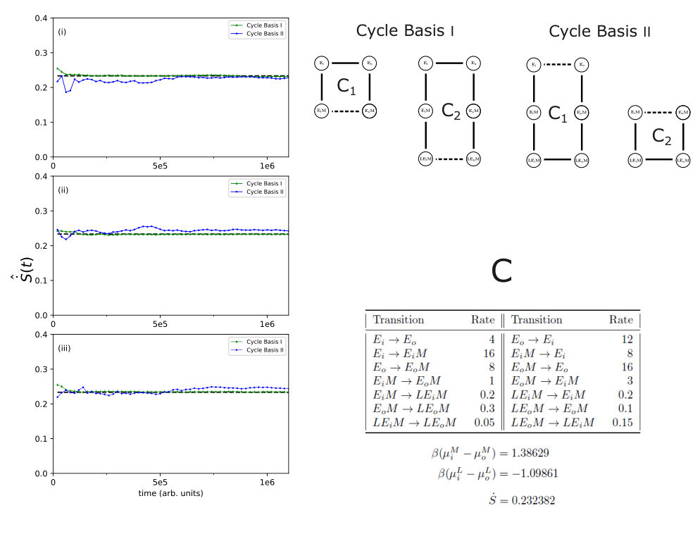
Summary. This paper introduces a method to calculate the entropy production rate of a Markovian system without needing to know transition rates or dwell times. By using only the sequence of states and total elapsed time, the method allows for the estimation of thermodynamic properties from incomplete trajectory data. It also demonstrates that choosing specific cycle bases can optimize the convergence of this estimator.
Why it may be interesting. This is highly relevant for researchers in open quantum systems and many-body dynamics, as it provides a way to quantify non-equilibrium properties and dissipation in systems where the full microscopic dynamics are not experimentally resolvable.
Main problem. Calculating the entropy production rate in non-equilibrium systems is difficult when underlying transition rates, dwell times, or transition times are unknown or unobservable.
Main result. The author presents a new method to infer the entropy production rate using only the sequence of visited states and the total trajectory time, bypassing the need for transition rates or dwell times.
Method. The method uses a fundamental-cycle decomposition (spanning tree approach) to express entropy production in terms of the log-ratio of forward to reverse cycle occurrences.
Model / system. The model consists of Markovian systems with discrete microstates and continuous-time dynamics, represented by a strongly connected, reversible directed graph governed by a master equation.
Key observables. Entropy production rate, net flux, cycle affinity, and the number of times a cycle occurs in a trajectory.
Important parameters / regimes. Total trajectory time, sequence of states, and the choice of cycle basis for convergence optimization.
Assumptions / limitations. The underlying dynamics must be Markovian, the system must have a finite number of discrete states, and the graph must be strongly connected and reversible.
Figures summary. Figure 1 illustrates a biological active transport system; Figure 2 shows spanning trees and cycle decomposition via chords; Figure 3 compares full vs. coarse-grained systems; Figure 4 demonstrates the convergence of the estimator using different cycle bases.
Paper structure. The paper begins by defining the problem of calculating entropy production, introduces the mathematical framework of Markov graphs and master equations, presents the new inference method based on cycle affinities, validates the method via Gillespie simulations, and discusses the impact of cycle basis selection and coarse-graining.
The entropy production rate is central to the study of non-equilibrium systems. This parameter is closely connected to violation of time-reversal symmetry, energy consumption, efficiency, and other properties of interest; in short, it quantifies how far a system is from thermodynamic equilibrium. Standard formulas for the entropy production require knowledge of the system's underlying dynamics, but this knowledge may be hard to acquire in practice. Here, I present a method for inferring the entropy production rate of a Markovian system from the sequence of states that the system occupies on a single long trajectory or many shorter trajectories, and the total time of the trajectory or trajectories. The method does not require knowledge of the dwell times in the various states, the times at which transitions occur, or of the transition rates characterizing the Markov process.
Authors: Zijian Gan, Shuyue Feng, Camryn J. Gloor, Wei You, Andrew M. Moran
Type: both · Category: quantum information and computing · PDF: https://arxiv.org/pdf/2605.28695v1
Analysis basis: full PDF text, analyzed in chunks
Topic relevance: 🔥 quantum optics experiment 4/5 · QC/QI experiment 3/5 · interference shaping light 3/5 · quantum measurements 3/5 · entanglement & information structure 2/5 · non-equilibrium dynamics 2/5
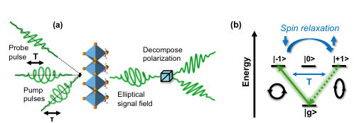
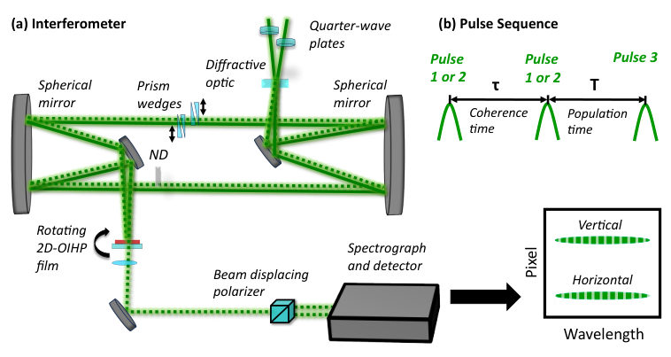
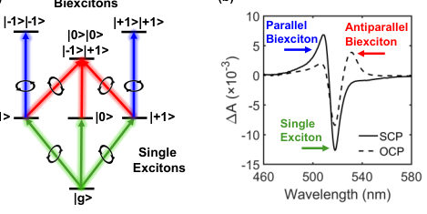
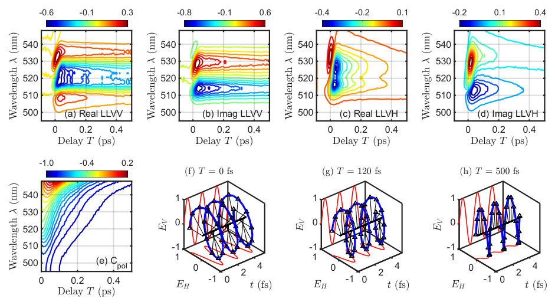
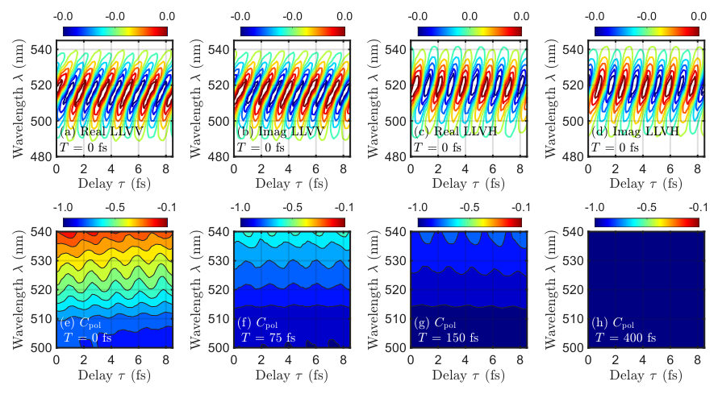
Summary. This paper investigates how the intrinsic spin and coherence dynamics of 2D perovskites can be used to generate secure quantum communication signals. By analyzing the Holevo bound and secret-bit rates, the authors show that controlling material parameters like population time can optimize information throughput. The work establishes a framework for using nonlinear spectroscopy to design new materials for quantum key distribution.
Why it may be interesting. It bridges nonlinear spectroscopy with quantum information theory, demonstrating how many-body dynamics (exciton-biexciton interactions) and spin relaxation can be engineered to optimize the security and throughput of photonic quantum networks.
Main problem. Evaluating the security metrics (Holevo bound and secret-bit rates) of quantum communication using nonlinear optical light sources generated from material-intrinsic dynamics.
Main result. Incorporating coherence time into the parameter space reduces the Holevo bound by 2.6-5.8%, and population-time encoding is found to be significantly more efficient for high-throughput communication than coherence-time encoding.
Method. The researchers use polarization-resolved interferometric measurements and field reconstruction to extract polarization density matrices, combined with a microscopic nonlinear response model for the Bloch vector.
Model / system. The physical system is a 2D organic-inorganic hybrid perovskite ((PEA)2PbI4) utilizing four-wave-mixing (FWM) signal fields, modeled via a reduced-order response-function framework involving single-exciton and biexciton resonances.
Key observables. Polarization contrast (C_pol), relative phase (delta_phi), Holevo bound (chi), effective secret-bit yield (Y_eff), and Bloch vector components.
Important parameters / regimes. Coherence time (tau), population/spin-relaxation time (T), detection wavelength (lambda), and spectral overlap (Xi_X,XXB).
Assumptions / limitations. The calculation assumes reconstructed fields are pure by construction, the system operates in the slow-modulation limit, and the exciton fine-structure splittings are smaller than the spectroscopic linewidths.
Figures summary. Fig 1 shows the FWM communication approach and spin dynamics; Fig 2 details the experimental setup; Fig 3 displays energy levels and transient absorption; Fig 4 shows polarization components and contrast; Fig 5 shows polarization modulation; Fig 6 presents Bloch-sphere representations; Fig 7 compares encoding efficiencies.
Paper structure. The paper introduces the quantum communication problem, describes the experimental FWM setup and material properties, presents the field reconstruction and security metric derivation, analyzes the results across different spectral regimes and encoding strategies, and concludes with implications for material-intrinsic quantum engineering.
Nonlinear optical light sources enable the generation of photons with quantum states that are intrinsically linked to underlying material dynamics, rather than imposed through external modulation. Here we investigate fundamental quantum communication metrics of four-wave-mixing signal fields generated by the two-dimensional perovskite (PEA)2PbI4. Using polarization-resolved interferometric measurements together with a microscopic nonlinear response model for the Bloch vector, we reconstruct effective single-photon polarization density matrices inferred from the experimental signal fields and evaluate the corresponding Holevo bound and effective secret-bit rates as a function of the coherence time, population time, and detection wavelength. We find that incorporating the coherence-time degree of freedom systematically lowers the Holevo bound by approximately 2.6-5.8% across the various excitonic resonances, indicating reduced distinguishability of the polarization states when the full multidimensional parameter space is sampled. To connect the polarization-state indistinguishability with experimentally achievable throughput, we further introduce an effective secret-bits-per-pulse metric that enables rapid evaluation of secure information throughput for candidate materials without requiring photon-number-resolved detection. For the present system, control of the population time via spin-dependent evolution yields substantially higher secret-bit rates than manipulation of the coherence time, while spectral regions associated with single-exciton and biexciton resonances define complementary operating regimes for secure communication. More broadly, this work positions nonlinear spectroscopy as a framework for exploring how emergent optical materials can generate and structure quantum states in ways that are advantageous for established quantum communication schemes.
Authors: Han S. Hiller, Pranav Parakh, Samuel H. Aronson, Kenji Maeda, Di Lao, Julian Stewart, Zengde She, Jierong Wang, Xiaodong Xu, Tony Heinz, Benjamin L. Lev
Type: experiment · Category: other · PDF: https://arxiv.org/pdf/2605.28815v1
Analysis basis: full PDF text, analyzed in chunks
Topic relevance: 🔥 quantum optics experiment 4/5 · Tavis-Cummings & cavity-many-emitter 3/5 · correlated cavity matter 3/5 · driven-dissipative phase transition 2/5
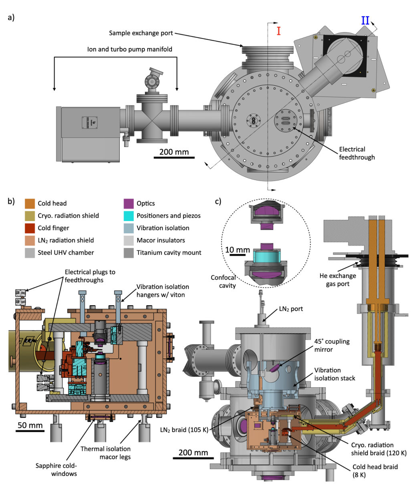
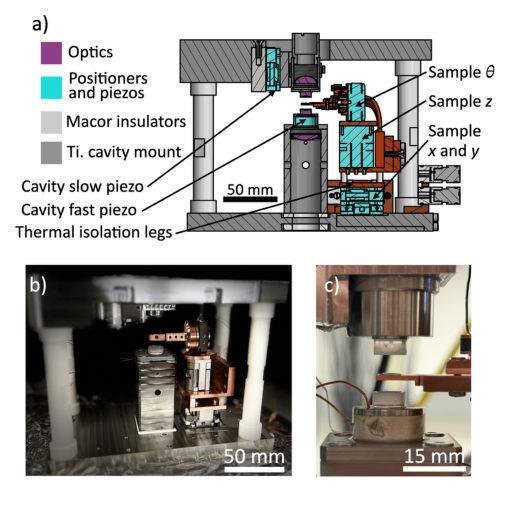
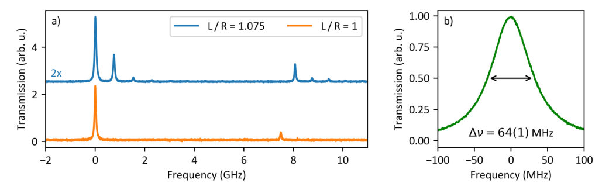
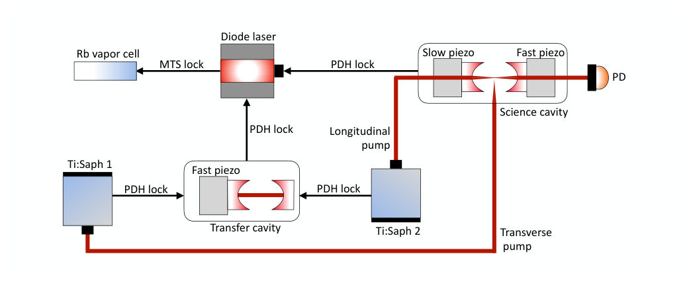
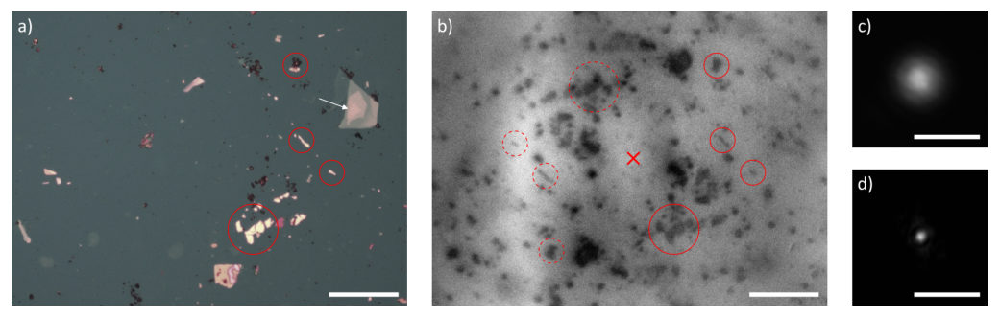
Summary. The paper describes the engineering of a new cryogenic apparatus designed to couple 2D materials to a confocal optical cavity. By using a confocal geometry, the system creates localized supermodes that enhance light-matter coupling while allowing for simultaneous electrical transport measurements. This platform enables the study of steady-state driven phenomena in correlated 2D systems.
Why it may be interesting. This work is highly relevant to cavity QED and quantum optics as it demonstrates a method to achieve high-cooperativity regimes using multimode supermodes, providing a platform for studying driven-dissipative phase transitions and light-matter interactions in 2D materials.
Main problem. The need for a stable, cryogenic, and ultrahigh-vacuum apparatus capable of coupling 2D van der Waals materials to a confocal multimode optical cavity for simultaneous optical and electronic measurements.
Main result. The development of a specialized platform that achieves high-finesse light-matter coupling using a confocal supermode while maintaining minimal mechanical vibrations and enabling electrical transport measurements.
Method. The researchers constructed a cryogenic UHV system featuring a length-tunable Fabry-Perot cavity, utilizing the Pound-Drever-Hall technique for frequency locking and a 4-axis nanopositioner for sample alignment.
Model / system. A cryogenic, ultrahigh-vacuum apparatus housing a length-tunable confocal multimode Fabry-Perot cavity containing hBN-encapsulated transition metal dichalcogenides (MoSe2 and WSe2) on a sapphire substrate.
Key observables. Cavity finesse, cavity length noise, sample displacement, transmission spectra, and electrical transport measurements.
Important parameters / regimes. Base temperature of 10.4 K, vacuum pressure of 10^-10 Torr, cavity finesse of ~208, and a supermode waist of ~1.7-9.5 micrometers.
Assumptions / limitations. The effective response of the cavity length to dispersive shifts is assumed to be subject to the finite bandwidth of the PDH servo.
Figures summary. Figure 1 shows the vacuum assembly and cavity/sample stack; Figure 2 details the 4-axis nanopositioner; Figure 3 displays cavity transmission spectra; Figure 4 shows the laser stabilization chain; Figure 5 presents in-situ sample images; Figure 7 shows the power spectral density of cavity length noise.
Paper structure. The paper introduces the scientific motivation, describes the construction and components of the cryogenic/UHV apparatus, details the optical and electrical measurement methods, presents performance metrics for stability and positioning, and concludes with the demonstration of the integrated platform.
Two-dimensional van der Waals materials exhibit a variety of correlated electron phases, and optical driving offers a promising route toward manipulating them. For example, cavity-enhanced, continuous-wave (CW) Raman excitation has been suggested as a way to coherently and superradiantly populate phonons or charge density waves via material excitons. A steady-state phonon population may be sustained with sufficiently strong electron-phonon coupling to drive novel collective response. We describe an apparatus built to meet the requirements of such an experimental program: Namely, an ultrahigh-vacuum system housing a length-tunable confocal Fabry-Pérot cavity with an intracavity sample, both cryogenically cooled and stabilized against vibrations. A four-axis nanopositioner aligns the sample and supports electrical leads for sample carrier density modulation and transport measurements. Transmission through the multimode cavity enables in situ sample imaging for alignment; the sample is a transition metal dichalcogenide in this work. Operating near the confocal geometry concentrates the optical field into a localized supermode that substantially enhances light-matter coupling. This enhancement is preserved despite the millimeter-scale cavity length, which provides room for sample alignment and exchange.
Authors: Yiyang Chen, Koyo Hirai, Tzyy Zheng Neo, Eiki Ota, Takashi Taniguchi, Masashi Miyakawa, Shinobu Onoda, Toshiharu Makino, Mutsuko Hatano, Takayuki Iwasaki
Type: experiment · Category: quantum information and computing · PDF: https://arxiv.org/pdf/2605.27841v1
Analysis basis: full PDF text, analyzed in chunks
Topic relevance: 🔥 QC/QI experiment 4/5 · 🔥 quantum optics experiment 4/5 · quantum measurements 2/5 · spintronics-quantum-optics interface 2/5
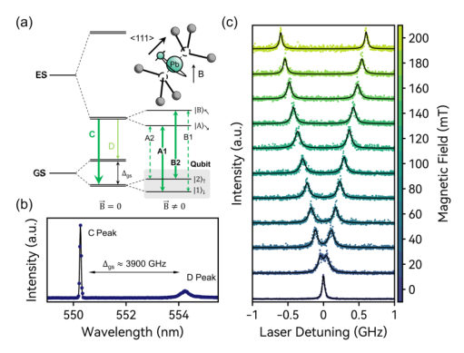
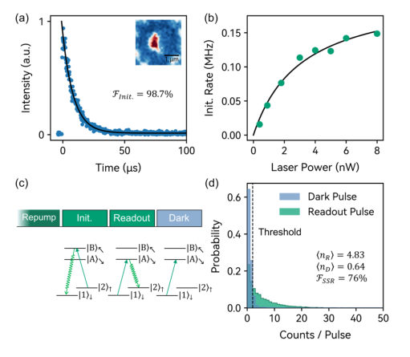
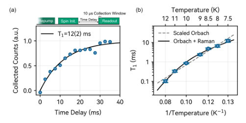
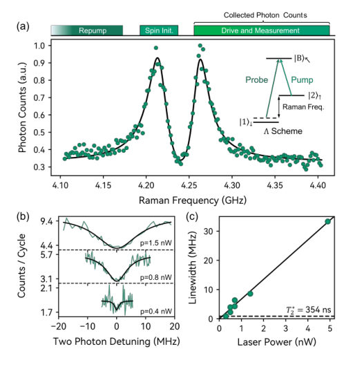
Summary. This paper demonstrates that lead-vacancy centers in diamond can maintain long spin lifetimes and optical coherence at temperatures above 4 K. By achieving successful single-shot readout and observing coherent dark state formation, the study positions PbV centers as highly promising candidates for scalable, thermally robust quantum networks.
Why it may be interesting. It demonstrates the use of coherent population trapping to create dark states in a solid-state system and provides experimental evidence of suppressed phonon-mediated decoherence due to large zero-field splitting, which is highly relevant to open quantum systems and quantum optics.
Main problem. The need for quantum emitters that can operate at higher temperatures (above 4 K) for scalable quantum networks while maintaining high optical coherence and suppressed spectral diffusion.
Main result. The PbV center in diamond demonstrates exceptional thermal robustness with a spin lifetime of 12 ms at 7.5 K and successful formation of a coherent dark state via coherent population trapping.
Method. The study uses photoluminescence excitation (PLE) spectroscopy, all-optical spin initialization and single-shot readout (SSR), and coherent population trapping (CPT) to characterize spin properties.
Model / system. A lead-vacancy (PbV) center in diamond, which is a spin-1/2 system with a large ground-state zero-field splitting of approximately 3900 GHz, implemented in a solid immersion lens (SIL) platform.
Key observables. Spin lifetime (T1), spin dephasing time (T2*), spin initialization fidelity, branching ratio, and saturation power.
Important parameters / regimes. Temperatures of 6.5 K to 13 K, magnetic fields up to 200 mT, spin lifetime of 12 ms at 7.5 K, and spin dephasing time of 354 ns at 6.5 K.
Assumptions / limitations. The decoherence at 6.5 K is assumed to be limited by the spin bath rather than phonon-mediated processes.
Figures summary. Fig 1 shows the PbV energy level structure, PL spectrum, and PLE spectra under magnetic fields; Fig 2 details the spin initialization process, pulse sequences for SSR, and photon counting statistics.
Paper structure. The paper introduces the motivation for high-temperature emitters, describes the PbV system and experimental setup, presents spectroscopic characterization, details spin initialization and readout results, and concludes with the implications for quantum networking.
A lead-vacancy (PbV) center in diamond exhibits coherent emission above the liquid helium temperature, making it highly attractive for quantum network applications. Here, we report the magneto-optical and spin properties of PbV centers in diamond. We record a spin lifetime of 12 ms at 7.5 K under large off-axis magnetic field. Furthermore, we observe formation of the coherent dark state by coherent population trapping and estimate a spin dephasing time of 354 ns at 6.5 K. This work demonstrates the outstanding thermal robustness of the PbV spin compared to other group-IV centers above 4 K.
Authors: Uri Sharell, Tilman Enss
Type: theory · Category: quantum gases · PDF: https://arxiv.org/pdf/2605.28606v1
Analysis basis: full PDF text, analyzed in chunks
Topic relevance: 🔥 non-equilibrium dynamics 4/5 · 🔥 non-equilibrium universality 4/5 · driven-dissipative phase transition 2/5 · scars & prethermalization 2/5
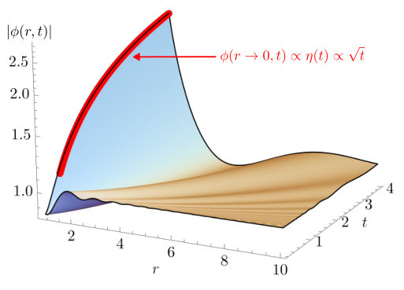
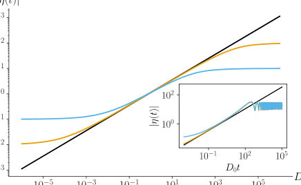
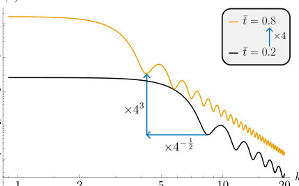
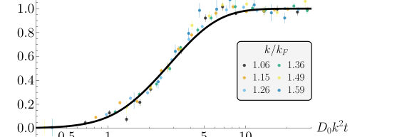
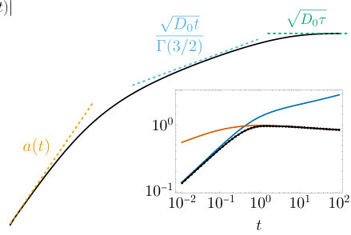
Summary. This paper demonstrates that the short-time evolution of pairing in driven quantum gases is governed by a fractional differential equation, leading to universal non-thermal scaling. It further shows that as many-body effects take over, the dynamics transition into a hydrodynamic regime described by a Müller-Israel-Stewart type equation. The theoretical predictions show excellent agreement with experimental observations of momentum distributions.
Why it may be interesting. It provides a unified mathematical framework (fractional calculus) to bridge the gap between non-equilibrium, non-thermal fixed points and classical hydrodynamics in many-body systems.
Main problem. Connecting the early-time, non-universal dynamics of driven quantum gases to their late-time hydrodynamic equilibrium regimes.
Main result. The authors discover that short-time pairing dynamics satisfy a fractional differential equation (FDE) characterized by a conformal fixed point and non-thermal scaling, which eventually relaxes into a Müller-Israel-Stewart type hydrodynamic attractor.
Method. The study employs Riemann-Liouville fractional calculus, Laplace transforms, and the Lippmann-Schwinger equation to derive analytical solutions for sudden quenches and power-law drives.
Model / system. The system consists of dilute, ultracold atomic gases with short-range attractive interactions, modeled by a time-dependent Schrödinger equation with a delta-function potential and Bethe-Peierls boundary conditions.
Key observables. Pairing amplitude, contact density, momentum distribution, and particle population growth.
Important parameters / regimes. Scattering length a(t), diffusion quantum D0, relaxation time tau, and non-thermal scaling exponents alpha and beta.
Assumptions / limitations. The derivation assumes the pairing amplitude is differentiable and that the initial integral of the fractional derivative is zero; it also assumes a specific form for the power-law drive.
Figures summary. The notes refer to a figure showing the theoretical prediction for particle population growth matching experimental data.
Paper structure. The paper introduces the problem of early-to-late time dynamics, derives the fractional differential equation for short-time pairing, provides analytical solutions for various driving protocols (quenches and power-laws), and concludes by describing the transition to the hydrodynamic regime and comparison with experiment.
Quantum gases with short-range attractive interaction have a tendency to form pairs. For time-dependent interaction we find that the pairing amplitude at small separation satisfies a fractional differential equation (FDE). We derive analytic solutions of the pairing evolution for sudden interaction quenches and power-law drives toward resonant scattering. We observe universal short-time dynamics governed by a conformal fixed point at which the momentum distribution exhibits nonthermal, self-similar scaling in time, in quantitative agreement with experiment. At longer times, many-body effects induce relaxation toward an equilibrium state. In this limit, the FDE turns into a Müller-Israel-Stewart type equation that describes a hydrodynamic attractor approaching equilibrium.
Authors: Antonio M. García-García, Lucas Sá, Jacobus J. M. Verbaarschot, Jie-Ping Zheng
Type: theory · Category: statistical mechanics · PDF: https://arxiv.org/pdf/2605.27512v1
Analysis basis: full PDF text, analyzed in chunks
Topic relevance: 🔥 entanglement & information structure 4/5 · 🔥 non-equilibrium dynamics 4/5 · non-equilibrium universality 2/5 · scars & prethermalization 2/5
Summary. This paper provides a complete analytical description of the dynamics of the SYK model across all time scales. It demonstrates that the evolution of quantum chaos, from initial exponential growth to late-time plateaus, is interconnected and deviates from standard random matrix theory due to energy-dependent correlations.
Why it may be interesting. This paper is highly relevant for many-body dynamics as it provides a unified analytical framework for understanding how information scrambling evolves into late-time ergodic behavior and identifies specific deviations from universal RMT predictions.
Main problem. Achieving a comprehensive understanding of many-body quantum chaos across all time scales, specifically bridging the gap from the early perturbative/scrambling regime to the late-time RMT/ergodic regime.
Main result. The authors obtained analytical expressions for Green's and OTOC functions at all time scales, discovering that late-time behavior deviates from standard RMT predictions due to local-in-energy correlations.
Method. A combination of the scramblon formalism, Random Matrix Theory (RMT) techniques, and numerical exact diagonalization/Krylov subspace methods.
Model / system. The q=4 Sachdev-Ye-Kitaev (SYK) model, specifically the N-Majorana version, in the infinite temperature limit.
Key observables. Retarded Green's function G(t), Out-of-Time-Order Correlator (OTOC) F(t), Wightman function G_W(t), and Spectral Form Factor (SFF) K(t).
Important parameters / regimes. System size N, Lyapunov exponent lambda_L, temperature beta=0, and the Ruelle-Pollicott resonances.
Assumptions / limitations. Assumptions include locality in energy for late times, energy-independent matrix elements within specific ranges, and the use of the SYKGUE model as a comparison for RMT behavior.
Figures summary. Figure 1 compares numerical ED data with various analytical fits (scramblon, Ruelle-Pollicott, power-law, RMT) for G(t) and F(t); Figure 2 shows the Wightman function and its derivative; Figure 5 shows time dependence for N=26.
Paper structure. The paper introduces the problem of multi-scale chaos, describes the SYK model and the scramblon/RMT methods, analyzes specific temporal domains (perturbative, scrambling, power-law, RMT), and concludes with a discussion on the interconnectedness of these regimes.
We describe the dynamics of many-body quantum chaotic systems at all time scales by studying the Green's and out-of-time order correlation (OTOC) functions of the four-body, $N$-Majorana Sachdev-Ye-Kitaev model. By combining the scramblon formalism and random-matrix-theory techniques, we obtain analytical expressions for these functions at all times. The early exponential growth of the OTOC is followed by an exponential decay at a rate governed by that of the Green's function (the real part of the leading complex Ruelle-Pollicott resonances). For late times that scale exponentially with $N$, both functions have a dip-ramp-plateau pattern for $N \mathrm{mod}8 = 2, 6$ that deviates substantially from the ergodic prediction due to local-in-energy correlations of matrix elements and eigenvalues, even after the Heisenberg time.
Authors: Hao-Wen Cheng, Xu-Zhao-Qiu Zeng, Yu-Chen Zhang, Yu-Hao Deng, Zhan Wu, Rui Lin, Yu-Cheng Duan, Zi-Han Chen, Jun Rui, Ming-Cheng Chen, Chao-Yang Lu, Jian-Wei Pan
Type: experiment · Category: other · PDF: https://arxiv.org/pdf/2605.28038v1
Analysis basis: full PDF text, analyzed in chunks
Topic relevance: 🔥 quantum optics experiment 4/5 · quantum measurements 3/5 · QC/QI experiment 2/5 · non-equilibrium dynamics 2/5
Summary. The study demonstrates a method to surpass the Standard Quantum Limit in a single-atom interferometer by using a squeezed-state protocol. By engineering the motion of a trapped Rubidium atom, the researchers achieved interference visibility significantly higher than the vacuum limit. The work also shows that this setup can be used for high-fidelity Wigner function reconstruction.
Why it may be interesting. This work is highly relevant for researchers in quantum optics and open quantum systems as it demonstrates active quantum state engineering to beat fundamental limits and provides a new interferometric method for continuous-variable Wigner tomography.
Main problem. The Einstein-Bohr recoiling-slit experiment is fundamentally limited by the Standard Quantum Limit (SQL) due to zero-point fluctuations of the atomic slit. The goal is to transcend this limit by actively engineering the quantum state of the atomic slit.
Main result. The researchers achieved an intrinsic interference visibility of 0.938, violating the SQL of 0.819 by over 10 standard deviations, corresponding to 7.6 dB of effective squeezing.
Method. A non-adiabatic quench-evolve-quench (QEQ) protocol is used to prepare the atom in a squeezed state, combined with global Bayesian analysis and Wigner tomography to reconstruct the quantum state.
Model / system. A single 87Rb atom trapped in an 852-nm optical tweezer, subject to an effective Kerr Hamiltonian due to the intrinsic anharmonicity of the trap.
Key observables. Interference visibility (V), quantum characteristic function (chi), Wigner function (W), and photon count asymmetry.
Important parameters / regimes. Lamb-Dicke parameter (eta = 0.316), squeezing parameter (S1 = 0.50), Kerr coefficient (K/omega1 = -0.011), and trap frequencies (37.8 kHz to 12.8 kHz).
Assumptions / limitations. The sudden quench approximation is used for trap modulation; the Truncated Wigner Approximation (TWA) is used to model non-Gaussian dynamics; and the system is assumed to be in the weak nonlinearity regime.
Figures summary. Figure 3 shows visibility as a function of trap durations and comparison to thermal limits; Figure 4 illustrates the evolution of the Wigner function from Gaussian to S-shaped non-Gaussian distributions.
Paper structure. The paper introduces the Bohr-Einstein problem, describes the experimental setup and QEQ protocol, presents the results of surpassing the SQL, analyzes the impact of Kerr-induced non-Gaussianity, and demonstrates the utility of the setup for Wigner tomography.
The Einstein-Bohr recoiling-slit gedankenexperiment, a cornerstone of quantum complementarity, has long been constrained by the zero-point fluctuations of the atomic slit -- the spatial Standard Quantum Limit (SQL). Here we transcend this fundamental boundary through active quantum state engineering of a single-atom slit. By implementing a non-adiabatic quench-evolve-quench protocol, we prepare the atomic motion in a squeezed state, dynamically redistributing phase-space uncertainty to suppress which-path information and restore high-visibility interference beyond the static vacuum limit. We report an intrinsic visibility of $0.938_{-0.008}^{+0.004}$, violating the SQL ($0.819$) by over 10 standard deviations, corresponding to $7.6(2)$ dB of effective squeezing. Our work reveals Kerr-induced non-Gaussian dynamics and reinterprets the traditional interferometer as a powerful tool for continuous-variable Wigner tomography, bridging the gap between quantum foundations and advanced metrology.
Authors: Andrea Celotto, Alessandro Alocco, Bernardo Galvano, Luca Fasolo, Emanuele Palumbo, Luca Callegaro, Luca Oberto, Patrizia Livreri, Emanuele Enrico
Type: experiment · Category: quantum information and computing · PDF: https://arxiv.org/pdf/2605.28808v1
Analysis basis: full PDF text, analyzed in chunks
Topic relevance: 🔥 QC/QI experiment 4/5 · quantum measurements 3/5 · quantum optics experiment 3/5
Summary. The paper presents a new method for measuring the noise and gain of cryogenic microwave devices by substituting the device with a known thermal noise source. This approach avoids the errors caused by the device's own nonlinearities during the calibration process. It was successfully tested on a nonlinear traveling-wave parametric amplifier.
Why it may be interesting. This is highly relevant for quantum optics and open quantum systems researchers as it provides a rigorous way to characterize the noise and signal integrity of nonlinear microwave components essential for quantum readout and signal processing.
Main problem. Accurately characterizing the gain and added noise of nonlinear cryogenic microwave devices, such as JTWPAs, is difficult because traditional serial measurement configurations introduce model-dependent biases and cannot easily decouple the device's internal dynamics from the readout chain.
Main result. The authors demonstrate a device-agnostic substitution-based metrology protocol that successfully extracts the gain and input-referred added noise of a JTWPA even under complex, pump-dependent nonlinear regimes.
Method. The protocol uses a substitution method where a controllable noise source (from a Variable Temperature Stage) is switched into the measurement path to replace the DUT, combined with Planck spectroscopy and SOLR S-parameter calibration.
Model / system. The experimental platform consists of a dilution refrigerator setup with a Variable Temperature Stage (VTS) and a Josephson Traveling Wave Parametric Amplifier (JTWPA) operating in the C and X bands at millikelvin temperatures.
Key observables. Power Spectral Density (PSD), S-parameters (gain, transmission, reflection), and input-referred added noise.
Important parameters / regimes. Pump power, signal frequency, system gain, system noise temperature, and the quantum-limited noise floor.
Assumptions / limitations. Assumes the noise source can be treated as a two-port component and that the electron temperature in the VTS follows the temperature of the copper body.
Figures summary. Figure 1 shows a flow diagram of photon detection; Figure 2 compares serial vs. substitution configurations; Figure 3 displays JTWPA gain and noise as functions of pump power; Figure 4 shows statistical bias in regression models.
Paper structure. The paper introduces the problem of calibration bias, proposes a substitution-based architecture, details the integration of SOLR and Planck spectroscopy, validates the method using a nonlinear JTWPA, and provides a mathematical analysis of potential errors.
Microwave devices capable of near-quantum-limited signal processing are essential components in the toolbox of solid-state quantum technologies. The manipulation and readout of single-photon microwave signals through amplifiers, mixers, isolators, etc. must fulfill strict requirements in terms of signal integrity to ensure reliable operation. These active microwave quantum devices operate in complex cryo-electronic setups. This poses challenges to their characterization, since all relevant figures of merit must be expressed at the reference planes of their ports. Even though cryogenic S-parameter calibration is non-trivial, metrological approaches are converging toward rigorous methods. Furthermore, preserving signal integrity must be quantified via absolute noise levels at the ports of the Device Under Test (DUT), requiring an absolute power reference. In this work, we present an in situ noise metrology protocol based on substituting a controllable noise source for the DUT. We motivate this choice by showing that placing the noise source at the DUT input impacts the separability of the calibration from the DUT characteristics. Our proposed architecture combines Planck spectroscopy using a Variable Temperature Stage with Short-Open-Load-Reciprocal scattering-parameter calibration, so that noise and scattering quantities are referred to the same cryogenic reference planes. In this configuration, the readout-chain calibration is separated from the internal dynamics of the DUT. As a demanding use case, we apply the protocol to a Josephson Traveling Wave Parametric Amplifier and extract its gain and input-referred added noise under pump conditions activating multimode nonlinear behavior. This illustrates how our device-agnostic protocol supports portable noise characterization of nonlinear cryogenic microwave devices.
Authors: Yishai Klein, Alessio D'Errico, Farid Ghobadi, Dilip Paneru, Nazanin Dehghan, Eliahu Cohen, Ebrahim Karimi
Type: experiment · Category: quantum information and computing · PDF: https://arxiv.org/pdf/2605.27653v1
Analysis basis: full PDF text, analyzed in chunks
Topic relevance: 🔥 QC/QI experiment 4/5 · 🔥 quantum optics experiment 4/5 · interference shaping light 2/5
Summary. This paper experimentally demonstrates the generation of correlated photon triplets by using a very weak coherent seed to stimulate parametric down-conversion. By measuring third-order correlations, the authors prove that the seed photon directly participates in the nonlinear process to create a three-photon state. This provides a new method for engineering multi-photon states for quantum technologies.
Why it may be interesting. It demonstrates a way to engineer higher-order multipartite photon states (like triplets) using weak seeds, which is highly relevant for quantum imaging, sensing, and generating complex states for quantum information processing.
Main problem. Investigating the transition from spontaneous to stimulated parametric down-conversion in the ultra-weak seed regime, specifically looking for genuine three-photon correlations.
Main result. The observation of a clear enhancement in third-order temporal correlations (g3n = 12.5) that confirms the seed photon stimulates the emission of a photon pair to form a correlated triplet.
Method. The researchers used third-order temporal correlation measurements and a background-normalized quantity (g3n) to distinguish stimulated three-photon events from accidental coincidences and spontaneous multi-pair emission.
Model / system. A continuous-wave, low-gain, type-I parametric down-conversion setup using a BBO crystal pumped by a 400 nm laser, with a weak coherent field (average photon number << 1) used as a seed.
Key observables. Third-order temporal correlation functions G(3)(0,0) and the normalized function g(3)n.
Important parameters / regimes. Low-gain regime (|eta t| << 1), ultra-weak seed regime (average photon number per coherence time << 1), and a seed detection probability of approximately 10^-6.
Assumptions / limitations. Undepleted pump approximation, low-gain approximation, and the assumption that the seed field does not significantly modify the underlying SPDC statistics.
Figures summary. Figure 1 shows the conceptual schematic of photon-triplet generation; Figure 2 details the experimental setup; Figure 3 displays the raw three-fold coincidence histogram and the flat normalized simulation results.
Paper structure. The paper introduces the concept of stimulated PDC, describes the experimental setup and theoretical Hamiltonian, details the normalization protocol and Monte Carlo validation, presents the experimental observation of the three-photon peak, and discusses implications for quantum technologies.
Parametric down-conversion is a widely used source of nonclassical light in quantum optics and photonic quantum technologies. While stimulated parametric down-conversion with strong classical seeds is well studied, the regime in which stimulation occurs at the single-photon level has hitherto remained largely unexplored experimentally. Here, we study continuous-wave, low-gain down-conversion seeded by a weak coherent field with an average photon number well below one per coherence time. By measuring third-order temporal correlations, we observe a clear enhancement that cannot be accounted for by spontaneous processes or accidental coincidences alone, and is consistent with stimulation involving the seed and the generated photon pair. These results provide time-domain evidence of seed-induced three-photon correlations and suggest new ways to engineer and probe multi-photon states for quantum imaging, sensing, and information processing.
Authors: Wolfgang Mück
Type: theory · Category: quantum information and computing · PDF: https://arxiv.org/pdf/2605.28681v1
Analysis basis: full PDF text, analyzed in chunks
Topic relevance: 🔥 entanglement & information structure 4/5 · non-equilibrium dynamics 3/5 · scars & prethermalization 2/5
Summary. This paper demonstrates that Krylov complexity encodes all information about the dynamics of a quantum operator. It provides a specific mathematical procedure to reconstruct the underlying Lanczos coefficients from the time-evolution of the complexity. This establishes Krylov complexity as a complete diagnostic tool for operator growth.
Why it may be interesting. This is highly relevant for many-body dynamics as it provides a fundamental 'proof of principle' for using a single complexity measure to fully characterize the evolution of quantum operators.
Main problem. The paper investigates whether Krylov complexity contains the complete information required to reconstruct the full dynamics of a quantum operator.
Main result. The author proves that Krylov complexity is a complete characterization of operator evolution and provides a recursive algorithm to extract Lanczos coefficients from its Taylor expansion.
Method. The study employs Taylor expansion analysis of the Krylov complexity and its moments, combined with the Lanczos algorithm and properties of orthogonal polynomials.
Model / system. The dynamics are modeled using a quantum operator evolving under a Liouvillian, which is mapped onto a one-dimensional semi-infinite chain (Krylov basis) described by a hopping model.
Key observables. Krylov complexity K(t), second spread complexity K2(t), return amplitude, and spectral density.
Important parameters / regimes. Lanczos coefficients (b_n, Delta_n) and diagonal terms (a_n) representing the Liouvillian action.
Assumptions / limitations. The reconstruction algorithm assumes that the input Taylor coefficients represent a valid, physically consistent Krylov complexity.
Paper structure. The paper begins by establishing the equivalence of Krylov complexity to other dynamical quantities, presents a recursive algorithm for coefficient extraction, and concludes by comparing Krylov complexity to spread complexity.
This paper establishes that Krylov complexity contains the entire information about the dynamics of a quantum operator, extending the list of equivalent quantities that can serve this purpose, such as the Lanczos coefficients, the return amplitude, and the spectral density. To demonstrate this equivalence, an explicit recursive algorithm is constructed to calculate Lanczos coefficients from the Taylor expansion of the Krylov complexity around $t=0$. Furthermore, the paper discusses the distinction between Krylov and spread complexity, clarifying why a similar recursive algorithm cannot exist for the latter without additional dynamical input. These results provide a ``proof of principle'' for using Krylov complexity as a complete characterization of operator evolution in quantum systems.
Authors: Kavyashree Ranawat, Jiyong Yu, Andrew Van Horn, Jacob Whitlow, Kenneth R Brown, Jungsang Kim
Type: experiment · Category: other · PDF: https://arxiv.org/pdf/2605.27577v1
Analysis basis: full PDF text, analyzed in chunks
Topic relevance: 🔥 QC/QI experiment 4/5 · quantum optics experiment 3/5 · correlated / nonlocal dissipation 2/5
Summary. The researchers developed a way to cool specific ions in a single-isotope chain without disturbing the quantum information stored in other ions. By using the Zeeman shift to create spectral isolation, they successfully suppressed motional heating while maintaining high qubit coherence. This approach reduces the hardware complexity and overhead typically required for sympathetic cooling.
Why it may be interesting. This work is highly relevant for quantum optics and open quantum systems as it provides a practical method for managing dissipation (cooling) in a many-body system (ion chain) while minimizing the impact of the environment on the system's internal quantum states.
Main problem. Achieving high-fidelity quantum logic in trapped ions requires cooling motional modes to the ground state without introducing decoherence to data qubits, which is challenging with traditional multi-species or multi-isotope cooling methods.
Main result. The authors demonstrate a same-isotope sympathetic cooling scheme using spectral selectivity via the Zeeman shift, achieving ground-state cooling of radial modes with minimal impact on data qubit coherence.
Method. The protocol uses a sequence of microwave pi-pulses, 4-35 nm shelving, and Raman transitions to selectively manipulate Zeeman states of coolant ions, combined with periodic cooling pulses to suppress heating.
Model / system. A 5-ion chain of 171Yb+ ions trapped in a cryogenic surface trap (8 K), operating in the Lamb-Dicke regime.
Key observables. Average motional phonon number (n-bar), heating rates, qubit coherence time (T2), and resonance frequencies of the quadrupole transition.
Important parameters / regimes. Natural linewidth of 3 Hz for the quadrupole transition, Zeeman shift separation of 11 MHz, and a duty cycle of approximately 70%.
Assumptions / limitations. Assumes the Lamb-Dicke approximation holds for radial modes but not strictly for axial modes; assumes an upper bound for photon scattering based on ideal polarization matching.
Figures summary. Fig 1: Detection scheme and spectroscopy; Fig 2: Cooling sequence schematic; Fig 3: Demonstration of targeted cooling across all radial modes; Fig 5: Steady-state phonon number vs. pulse number; Fig 6: Spin-echo data showing coherence decay; Fig 7: Decay rate dependence on laser intensity and detuning; Fig 8: Laser amplitude stability (Allan deviation).
Paper structure. The paper introduces the problem of motional heating and existing cooling limitations, describes the experimental setup and the new spectral-selective protocol, demonstrates successful mode-specific cooling, analyzes the resulting decoherence in data ions, and provides a theoretical analysis of secondary error sources like light shifts and photon scattering.
High-fidelity quantum logic operations in trapped ions often require the ions' collective motion to be cooled to near the ground state. Since cooling the ions' motion typically involves dissipative processes such as spontaneous photon scattering, sympathetic cooling is used on select coolant ions between gate sequences to cool the ion chain without affecting the data qubits. Common implementations for coolant ions include different atomic species, different isotopes of the same species or individually addressable ions. Each of these approaches have challenges associated with them, which include increased hardware complexity, reduced efficiency of radial mode cooling and re-ordering events which add additional experimental overhead. We demonstrate a sympathetic cooling scheme leveraging internal metastable atomic levels accessible via a narrow quadrupole transition, utilizing the natural Zeeman shift and individually addressed Raman transitions, to achieve isolation of the non-coolant or ``data ions" from coolant ions. We demonstrate modest decoherence of the data ions due to cooling, while preserving the coherence requirements for high-fidelity gate operations.
Authors: Han Xu, Tomonori Shirakawa, Seiji Yunoki
Type: both · Category: quantum information and computing · PDF: https://arxiv.org/pdf/2605.28040v1
Analysis basis: full PDF text, analyzed in chunks
Topic relevance: 🔥 QC/QI experiment 4/5 · entanglement & information structure 2/5 · quantum measurements 2/5
Summary. This paper introduces a new protocol called Filter-assisted SQD (FSQD) to solve the efficiency problems in quantum subspace diagonalization. By using a quantum circuit to transform the Hamiltonian, the method makes the ground-state wavefunction sparser, which drastically reduces the number of measurements needed to estimate energies accurately. The approach is validated through both large-scale numerical simulations and experiments on real quantum hardware.
Why it may be interesting. It provides a scalable framework for many-body calculations by using a quantum filter to reshape the measurement distribution, directly addressing the sampling bottleneck in quantum-centric algorithms for strongly correlated systems.
Main problem. The intrinsic trade-off in sample-based quantum subspace diagonalization (SQD) between sampling efficiency and wavefunction sparsity, which causes exponential resource growth in strongly correlated systems.
Main result. The proposed Filter-assisted SQD (FSQD) protocol significantly enhances wavefunction sparsity and reduces ground-state energy estimation errors by orders of magnitude while substantially lowering sampling overhead.
Method. A protocol that uses a quantum filter (a unitary transformation of the Hamiltonian) implemented via a tensor-network-based circuit-encoding algorithm to concentrate ground-state weight onto fewer basis states.
Model / system. The study focuses on many-body systems in the strongly correlated regime, specifically using the quantum Ising model with transverse and longitudinal fields as a benchmark, with demonstrations on systems up to 100 qubits and hardware experiments on IBM's ibm_kobe processor.
Key observables. Ground-state energy estimation error, Gini coefficient (sparsity measure), Lorenz curve, sampling overhead (number of shots), and subspace dimension.
Important parameters / regimes. Gini coefficient (G), subspace dimension (NR), number of measurement shots (NS), and the scaling exponent (g) of the sampling overhead.
Assumptions / limitations. The quantum state is prepared by applying a unitary operator to the zero state, and the accuracy depends on the fidelity of the tensor-network-based circuit encoding.
Figures summary. Figure 1 compares standard SQD with FSQD variants; Figure 2 shows the piecewise-linear approximation of the Lorenz curve; Figure 3 illustrates the MPS circuit-encoding algorithm; Figure 9 shows optimization convergence; Figure 13 shows qubit layouts on the IBM hardware.
Paper structure. The paper identifies the SQD bottleneck, proposes the FSQD protocol, establishes theoretical resource bounds using the Gini coefficient, details the MPS-based circuit-encoding implementation, and validates the approach through numerical simulations and quantum hardware experiments.
Subspace diagonalization techniques based on quantum sampling, such as quantum selected configuration interaction (QSCI) and sample-based quantum diagonalization (SQD), have recently emerged as promising quantum-centric approaches for approximating ground-state energies of many-body systems. However, their performance is fundamentally limited by an intrinsic trade-off between sampling efficiency and the sparsity of the ground-state wavefunction, which becomes particularly severe in strongly correlated systems. Here, we introduce a filter-assisted SQD protocol that engineers wavefunction sparsity via a quantum filter, i.e., a unitary transformation of the Hamiltonian designed to concentrate the ground-state weight onto a small number of computational basis states. Using the Gini coefficient as a robust sparsity measure, we establish a quantitative relationship between wavefunction sparsity and the resource requirements of SQD, providing theoretical bounds on the required subspace dimension and sampling cost. To realize the quantum filter, we employ a tensor-network-based circuit-encoding algorithm that maps target states to quantum circuits with controllable fidelity. We benchmark our approach on the quantum Ising model with transverse and longitudinal fields using both numerical simulations and quantum hardware experiments. Our results demonstrate that, compared with standard SQD, the proposed protocol significantly enhances wavefunction sparsity, reduces ground-state energy estimation errors by orders of magnitude, and substantially lowers sampling overhead. These findings establish filter-assisted subspace diagonalization as a powerful and scalable framework for quantum many-body calculations in the strongly correlated regime.
Authors: Shagun Kaushal, Harkirat Singh Sahota
Type: theory · Category: quantum information and computing · PDF: https://arxiv.org/pdf/2605.28055v1
Analysis basis: full PDF text, analyzed in chunks
Topic relevance: 🔥 entanglement & information structure 4/5 · correlated / nonlocal dissipation 2/5
Summary. This paper demonstrates that a cylindrical cavity can selectively suppress entanglement while enhancing quantum discord. It shows that boundary conditions break translational invariance and create a regime where more general non-classical correlations persist even after entanglement has vanished.
Why it may be interesting. It provides fundamental insights into how spacetime boundaries and geometric confinement can be used to control the types of quantum correlations available, which is crucial for understanding entanglement harvesting and the robustness of non-classicality in open quantum systems.
Main problem. Investigating how geometric confinement in a cylindrical cavity reshapes the hierarchy of quantum correlations, specifically whether the suppression of entanglement is accompanied by the preservation or enhancement of quantum discord.
Main result. The cavity suppresses distillable entanglement (negativity) and induces 'sudable death' at smaller separations, while simultaneously enhancing quantum discord near the cavity boundary.
Method. Perturbative expansion of the Unruh-DeWitt model up to second order in coupling strength, using the Wightman function for a massless scalar field with Dirichlet boundary conditions.
Model / system. Two stationary Unruh-DeWitt detectors (two-level systems) coupled to a massless scalar field confined within a perfectly reflecting cylindrical cavity of radius R and large length L.
Key observables. Entanglement negativity, quantum discord, and mutual information.
Important parameters / regimes. Cavity radius (R), detector separation (rho_0), detector energy gap (Omega), switching time (sigma), and the dimensionless ratio sigma/R.
Assumptions / limitations. The field is in the vacuum state, detectors are pointlike and stationary, the interaction is perturbative (O(lambda^2)), and the cavity is infinitely long.
Figures summary. Figure 1 shows the convergence of the nonlocal correlation term series; Figure 2 plots the behavior of various correlation terms (local noise, cross-correlations, and non-local correlations) as a function of detector separation.
Paper structure. The paper introduces the problem of correlation hierarchy, derives the reduced density matrix using the Unruh-DeWitt framework in a cylindrical geometry, analyzes the convergence of the mode expansion, presents numerical results for different correlation measures, and discusses the implications of boundary-induced asymmetry.
We study correlations between two Unruh-DeWitt detectors coupled to a scalar field in a cylindrical cavity. Boundary conditions strongly modify the detector-correlation dynamics relative to free space. The entanglement negativity is suppressed in the cavity and vanishes for smaller separation as compared to the free space. Increasing the cavity radius does not recover the free-space behavior of the negativity. In contrast, mutual information and quantum discord remain nonzero over much larger separations. While the mutual information decays monotonically with separation, the quantum discord is enhanced near the cavity boundary. Our results demonstrate that geometric confinement can selectively suppress distillable entanglement while preserving and even enhancing more general non-classical correlations, providing a controlled setting to probe the hierarchy of correlations in quantum field theory.
Authors: Lucas Marti, Sumeet, Stefan Wolf, K. P. Schmidt, Michael J. Hartmann
Type: both · Category: quantum information and computing · PDF: https://arxiv.org/pdf/2605.28599v1
Analysis basis: full PDF text, analyzed in chunks
Topic relevance: 🔥 QC/QI experiment 4/5 · analog quantum simulation 2/5
Summary. This paper explores using a 20-qubit trapped-ion processor to compute many-body dispersion relations in the thermodynamic limit via a hybrid quantum-classical expansion technique. It demonstrates that while current hardware can successfully implement the necessary non-linear transformations, noise significantly biases the results and necessitates much higher gate fidelities for more complex algorithms like ASP.
Why it may be interesting. It addresses the critical challenge of how error propagation through non-linear classical post-processing affects the extraction of many-body properties from NISQ-era quantum devices.
Main problem. Determining if current noisy quantum hardware can accurately compute thermodynamic-limit dispersion relations using non-linear classical post-processing of quantum data.
Main result. The study demonstrates that the NLCE+VQE framework is viable on current trapped-ion hardware, producing recognizable dispersion relations, though noise significantly biases results and ASP requires much lower error rates to be competitive.
Method. The authors combine Numerical Linked-Cluster Expansion (NLCE) with quantum algorithms (VQE and ASP) and use a novel CX-test for efficient measurement of matrix elements.
Model / system. The study uses a 20-qubit AQT Marmot trapped-ion quantum processing unit to simulate the Transverse-Field Ising Model (TFIM) in 1D chains, 1D chains with a longitudinal field, and 2D ladders.
Key observables. Ground-state energies and one-quasi-particle (1QP) dispersion relations omega(k).
Important parameters / regimes. Coupling strength J/h, longitudinal field strength hl, cluster size Nmax, and gate depolarization rates.
Assumptions / limitations. The perturbation is small enough to avoid quantum phase transitions or quasi-particle decays, and the hardware error is primarily modeled as depolarizing noise.
Figures summary. Figures illustrate the HVA ansatz, the CX-test circuit, the impact of depolarization noise on dispersion curves, and comparisons between QPU, simulation, and analytical results for various TFIM regimes.
Paper structure. The paper introduces the NLCE+QA framework, details the PCAT post-processing and CX-test measurement technique, compares VQE and ASP algorithms, analyzes the impact of hardware noise and stability, and concludes with the requirements for reaching the classical limit.
We run a numerical linked-cluster expansion with a quantum algorithm (NLCE+QA), computing ground-state energies and one quasi-particle dispersions in the thermodynamic limit using a 20-qubit trapped-ion quantum processing unit (QPU). The NLCE+QA framework extracts thermodynamic-limit properties from small-cluster calculations, making it naturally suited for near-term quantum devices. Projector-based block-diagonalization schemes such as projective cluster-additive transformation (PCAT) are essential to NLCE+QA, and they involve matrix inversion and square root operations that amplify measurement noise. A central question is therefore whether current hardware can provide expectation values that are accurate enough to withstand non-linear classical post-processing. We explore this challenge for the transverse-field Ising model (TFIM) in one dimension, on a ladder geometry, as well as in a longitudinal field in one dimension. For the quantum algorithm, we consider adiabatic state preparation (ASP), as well as a variational quantum eigensolver (VQE) trained on a classical device. The final expectation values are obtained from the QPU, using a novel alternative to the Hadamard test that we name the CX-test. We explore the regimes currently attainable on quantum devices and comment on the improvements needed for quantum computers to achieve results beyond classical reach.